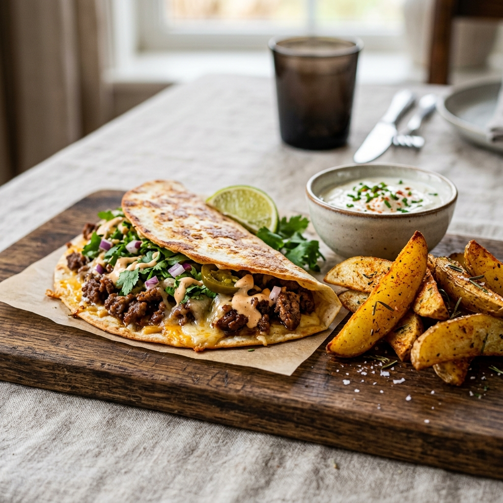

Smashed Beef Tortilla
A crispy, savory fusion dish where seasoned beef is seared directly onto a tortilla for maximum flavor and crunch.

The Art of the Smash
This recipe is all about high heat and direct contact. By spreading the minced beef thinly across the tortilla and pressing it into a hot pan, you achieve a beautiful Maillard reaction—that deep, savory crust that defines a great burger or steak. The tortilla acts as a protective shield, getting crispy on the edges while the meat cooks to perfection.
Ingredients
Serves: 1-2 | Time: ~15 min
Base Ingredients
- 250g Minced beef (at least 15-20% fat for flavor)
- 2 Flour tortillas (medium size)
- A handful Grated cheese (cheddar, mozzarella, or a mix)
- 1 tbsp Neutral oil (vegetable or sunflower)
Seasoning
- 2 cloves Garlic, finely minced
- 1 tbsp Fresh coriander, chopped
- To taste Salt & freshly ground black pepper
Serving Suggestions
- Oven-roasted potatoes (wedges or cubes)
- Your favorite sauce (yogurt-based, spicy mayo, or salsa)
Method
1. Season the Beef
In a mixing bowl, combine the minced beef with the minced garlic, chopped coriander, salt, and pepper. Mix well by hand to ensure the seasonings are evenly distributed.
2. Prepare the Tortilla
Take a portion of the beef mixture and spread it in a thin, even layer across one face of the tortilla. Make sure to cover the surface almost to the edges, as the meat will shrink slightly when cooking.
3. The Big Sear
Heat a little oil in a pan over medium-high heat. Once the pan is hot, place the tortilla in the pan, meat-side down. Press down slightly with a spatula to ensure good contact. Cook until the beef is fully cooked and has developed a dark, crispy crust.
4. Melt & Serve
Remove the tortilla from the pan and place it on a plate. Immediately sprinkle the grated cheese over the hot meat. The residual heat from the beef will melt the cheese perfectly. Fold it or leave it open, and serve alongside crispy oven potatoes and your choice of sauce.